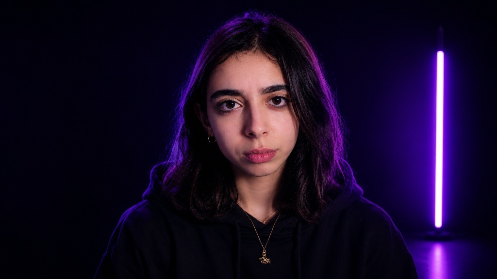

Étudiant en Licence 2 Informatique passionné par le développement web et l'analyse des données. Mon parcours m'a conduit à explorer le front-end avec enthousiasme, de HTML/CSS aux frameworks modernes comme React. Je crois que le code est un art, et que chaque projet est une opportunité de créer quelque chose d'unique. En dehors du code, je m'intéresse à l'analyse des données, au design UI/UX . Mon objectif : devenir développeur full-stack et contribuer à des projets innovants.
Formation en développement web, algorithmique, bases de données et système d'exploitation. Spécialisation en programmation web avancée , structure des données en C , avec la programmation orientée objet en C++.
Fondamentaux de MATHEMATIQUES PHYSIQUE ET INFORMATIQUE : introduction à la programmation (Python, C), mathématiques discrètes,les bases de physique.
Baccalauréat obtenu avec mention. Option SCIENCE PHYSIQUE.